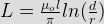
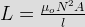

- What is the unit of magnetic charge?
The magnetic charge is current element like Idl, Kds, Jdu, having the unit of ampere meter.
- Which of the following statement for a divergence of electric and magnetic flux densities?
From Maxwell’s first equation we get,
Divergence of (D) = ρ v
Divergence of (E) = ρ v
So, divergence of electric field intensity is non zero. From Maxwell’s fourth equation we get, divergence of magnetic field intensity is zero. - Which is the major factor for determining whether a medium is free space, lossless dielectric or a good conductor?
As tanδ = σ/(ωε).
- If the static magnetic flux density is B, then
For static fields the Maxwell equation in integral and differential are
Surface integral of (B.ds) = 0
Hence divergence of (B) = 0. - The force on a charge moving with velocity v under the influence of electric and magnetic fields is given by which one of the following?
The force is required to do work on the particle and therefore changes the kinetic energy,
FE = q.E
The force on charge moving with velocity v under the magnetic field,
FM = q.V × B
So total force on a charge moving with velocity v under influence of electric and magnetic field are called Lorentz force. The value of Lorentz force is q(E + V × B). - Which of this statement is not characteristic of a static magnetic field?
Although magnetic field is not conservatives, magnetic flux is conserved closed integral B.ds = 0.
- A rectangular loop in the x – z plane bounded by the lines x=o, x=a, z=o and z=b is in a time varying magnetic field is given by B=Bo cosω + ay. Where Bo is constant, ω is angular frequency and ay unit vector in the y direction. Now the emf induced in the loop is given
As B = Bo cosω + ay
The emf inducted, e(+) = d/dt (B) = ab ω Bo sinω t. - Magnetic field intensity at sentre of circular coil, of diameter 1 m and carrying a current of 2 A is
B = (μ0 I)/2R
Magnetic field intensity at centre of circular coil = I/2R. - Consider a long, two wire line composed of solid round conductors. The radius of both conductors is 0.25 cm and distance between their centers is 100 cm. If this distance is doubled, then the inductance per unit length.

Where d and r distance between wires and radius respectively.
Here L ∝ lnd. So, when d is doubled inductance increase but does not doubled. - A coil of 300 turns is wound on a non magnetic core having a mean circumference of 300 mm and a cross sectional area of 300 mm2. The inductance of the coil corresponding to a magnetizing current of 6 A will be
Inductance of coil,
. - The magnetic at any point on the axis of current carrying circular coil will be
With coil x – y plane, the field will be in uz direction.
- The Kirchhoff’s current law is implict in expression
Current at a node is zero, current entering = current leaving. So, surface integral of (j.ds) = 0.
- A wire 1 m long carries a current of 5 A and is at angle of 30 with B = 1.5 wb/m0. Magnitude of force
F = BIL sinθ.
- A negative point charge q = - 40 nc is moving with velocity of 6 × 106 m/s on adirection specited by unit vector uv + 0.6 uz. Find the magnitude of vector forced on the moving particle by the field B = 2 un 3 uy + 5 uz mT and E = 2 ux - 3 uy + 5 uz KV/m
Apply F = Q(E + V × B).
- Which statement is not true of ferromagnetic materials?.
H curve is not linear. So μr is not constant.
- The hysteresis loop of a magnetic material has an area of 5 cm2 with the scale given as 1 cm = 2 AT and 1 cm = 50 mwb At 50 Hz; the total hysteresis loss is
Power loss in watt given as,
Ph = W h v.f
Where Wh = energy density loss
V = Volume of material
In this case, Wh.V = area of hysteresis loop = 5 cm2. - A magnetic field B = 5 × 10-2 uz T exerts a force on 0.02 m conductor along the x-axis. The conductor carried a current of 5 mA in the – ux direction. What force must be applied to the conductor to hold it in position?
F = IL × B
Applied forced Fa = - (IL × B)
Since Fa force hold conductor position. So the force will be opposed. - A magnetic vector potential is given by the expression A = (- cos x) (cos y) uz. The flux density at the origin is
B = curl of A
 u_x - \frac{ \delta }{ \delta x} (- \cos x \cos y) = \cos x \sin y - \sin x \cos y")
Since flux density at origin (x = 0, y = 0) so B = 0. - A circular loop has its radius increasing at a rate of 2 m/s. The loop placed perpendicular to a constant magnetic field of 0.5 wb/m2. When the radius of the loop is 4 m. the emf induced in the will be
Area of the loop A = π r2
Magnetic of unit emf induced dQ/dt.
[math e(t) = \frac{d}{dt} {B \pi r^2} = B \pi 2r \frac {dr}{dt} [/math]. - Find H for centre of solenoid having finite length d = 1 unit where N = no of turns = 500, 1 = 2 A.
: From biot savarts law, magnetic field intensity for a solenoid is given as
H = NI/ux.
Design with  by SARU TECH
by SARU TECH
www.sarutech.com
Content Credited to electrical4u.com
Online Electrical Engineering Study Site